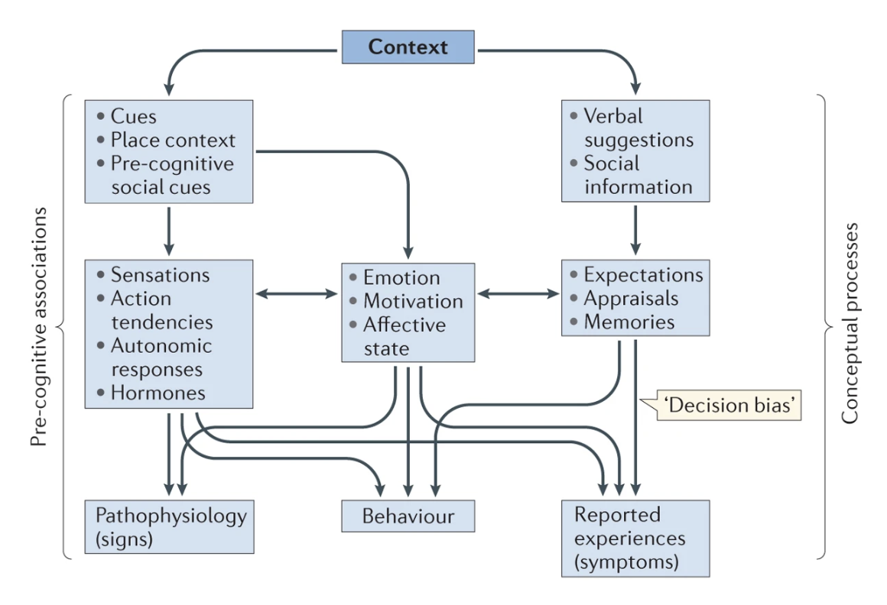

Why I care about psychology
This article is a collection of miscellaneous thoughts and experiences that have strengthened my interests in applied psychology and mental conditioning.
I shadowed at a physical therapy clinic in Seattle over May-August 2025, to understand how to educate about movement (especially under time and attention-span constraints), to calibrate my knowledge and judgment about risk factors from a standpoint broader than my own experiences, to understand how continued rehabilitation and progression might be supported by a trainer/coach once a patient graduates from physical therapy etc.
I knew that a solid base in anatomy, biomechanics, and clinical research etc. are prerequisites for clinicians. But I had under-appreciated the degree to which clinicians must also account for the mindset of the patient, their beliefs and fears, their level of trust in the practitioner/process etc.
For example, patients with chronic pain may have a lower threshold for additional discomfort, those for whom specific physical activities are identity contenders might be eager to return to those activities without adequate recovery and graded preparation etc. Some patients might benefit from education about underlying science and inherent uncertainty of the process, others yet may be looking for more practical steps to manage pain in the short term. Rehabilitation is not linear; patients might struggle to recall and perform the movements without compensation independently, they might have to engage with some level of pain on the way to determining a dose of movement that is both tolerable and effective.
I attended my first NSCA conference in March 2026, where I got to learn from talks by strength and conditioning coaches at various levels—those coaching high schoolers to those coaching olympians. A common thread was that with experience, aside from domain knowledge in physical conditioning, supporting athletes towards sustaining motivation to train consistently and with focussed effort, helping athletes navigate performance anxiety, structuring processes to adapt to the individual athletes preferences etc. become important contributors to their effectiveness as coaches.
The association of psychology with physiology is well documented in some research settings (e.g. sport performance (Lochbaum et al. 2022), clinical depression (Pearce et al. 2022) etc.), but the relationship is more general than that. For instance, most of us have experienced the physiological effects of psychological stress first-hand (e.g. see (Sapolsky 2004) for an engaging overview to modern scientific developments around this).
It is also becoming clear that beliefs can have consequential physiological responses to exercise, nutrition, and even medical drugs (e.g. (Benedetti 2013)). Conversely, physiological interventions such as physical movement and exercise have measurable effects on psychology (e.g. (Noetel et al. 2024)).

In my opinion, psychological management and conditioning is an often overlooked lever for physical well-being, and it serves as added motivation for me to explore this topic.
My own mindset around pain has changed quite drastically over time. I used to be fearful of injuries. Knowledge and experience around movements over a period of time eased my fears, and I became more willing to experiment, and more accepting of injuries. I was supported in this journey by a wonderful physical therapist, who not only pointed me in the right direction to understand movement better, but also helped me reason better.
The relationship between physical pain, possible causes, and effects of interventions is complex, and is very much subject of ongoing research. From the patient’s perspective, discomfort with ambiguity might contribute to an eagerness to accept simplistic explanations, and attribute recovery from pain to the most recent intervention. Far too many providers weaponize this and benefit from the accompanying trust halo.
I’m interested in understanding how to teach a resilient, playful, and accepting mindset around pain, while simultaneously encouraging a healthy relationship with uncertainty and skepticism around explanations.
I take on the roles of being a learner at times, and also a teacher at times in the domains of physical health, academic research, and music. These are all long term pursuits for me. Setting goals, overcoming current limitations, handling setbacks are recurring themes irrespective of the domain. I want my engagement in any pursuit to be filled with curiosity and lightness, and experience flow states as much as possible along the way.
The reconfiguration of my own perspective around pain and physical exercise had me wondering if I could transfer that to these other domains. Looking for a broader roadmap here also points to applied psychology from the perspective of conditioning¢ mental health, with much to import from clinical therapeutic approaches as well.
¢ Conditioning is preparation through structured training, towards building and supporting capacity to meet the demands of performance. In the physical health context, this could be about engaging in activities of daily life, or competing in a particular sport, etc. In the mental health context, it could be about handling routine concerns, or meeting demands of high-stress roles, etc.
It’s easy to lose sight of the fact that we are integrated biological systems, where virtually no action we take affects an isolated attribute or entity. This is true at the cellular level, at tissue-systems level, and the individual level. The individuals are themselves an inextricable part of society and the world around them. This is very much along the lines of the biopsychosocial model of health, and I highly recommend (Borrell-Carrió et al. 2004) as an accessible read along these lines.
Furthermore, the attributes and entities themselves are often defined only in an operational sense, and often carry historical artifacts—usually to facilitate measurement and organize understanding in research. Reorganizing formal domains and systems in response to new evidence is slow, more akin to technical debt for society. It is then up to practitioners to bridge the gap.
As an example, we have decades of evidence showing associations of oral/dental health with chronic metabolic syndrome conditions such as Diabetes and Atherosclerosis, and now increasingly even with neurological conditions such as Alzheimer’s disease. Yet, insurance systems in the United States continue to consider dental health independently from general health.
Physical and mental conditioning aren’t separable in reality. Physical activity affects mental states and vice versa. Nevertheless, the broad grouping of physical activity into cardio-vascular, resistance, and plyometric categories (I’ve written about this here) is a useful and operable organization of components of athletic capacity. The quest for me is to understand mental conditioning from an analogous perspective.